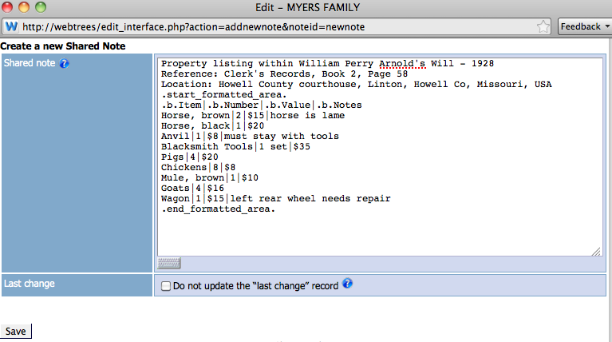
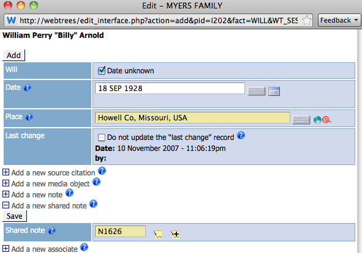
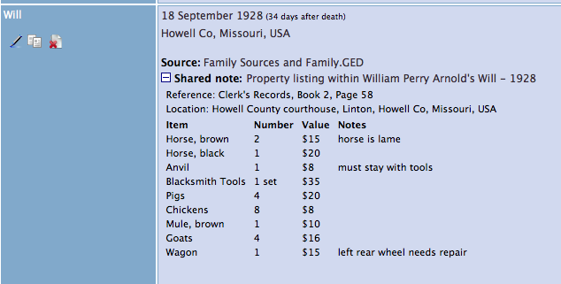

Module Assistant Recensement
Sommaire
But
Cet outil vous permet d'ajouter tous les détails d'une page de recensement (actuellement seulement US ou UK) à toutes les personnes listées sur celle-ci (en assumant que ces personnes existent dans votre fichier GEDCOM) en un seul processus. Il inclut des outils vous aidant à trouver les individus pertinents et présente les résultats sous une forme facile à lire, format et notes partagées, contenant tous les faits-clés de la page originale du recensement.
Voici un exemple de présentation, une fois les données complétées :
{kind=link}
Comment l'utiliser ?
Étape préliminaire
Pour ajouter les données du recensement, débuter avec n'importe lequel des individus de la maison listés sur la page du recensement. Sélectionner Recensement [CENS] dans la liste en utilisant la flèche déroulante de l'option Ajouter un nouvel enregistrement située au bas de la fiche individuelle, puis cliquer sur le bouton Ajouter. [Idéalement vous devriez débuter avec le 'Chef' de famille, mais cela n'est pas esssentiel]
Cette action ouvrira une fenêtre d'édition Recensement (pop-up)
{kind=link}
À partir d'ici, les premières étapes sont :
- Entrer la date du recensement, soit directement dans le champ Date, soit en utilisant la flèche déroulante "Date du recensement" et en sélectionnant le recensement pertinent. Ceci entrera automatiquement la date exacte dans le champ Date.
- Entrer tous les autres détails requis, tels que Lieu et Adresse, ou ajouter un objet média si vous en désirez un à ce niveau.
Très important: N'entrez ici que les données communes à tous les individus de cette maison / de cette page du recensement. Donc, n'entrez pas l'âge d'un individu (information propre à un seul individu) sinon plus tard dans le processus, cet âge sera appliqué à tous les autres individus.
Ensuite ajouter une Source pour cet événement, en cliquant sur le lien Associer une source et en complétant les détails appropriés.
À ce point, il y a deux options pour ajouter une Note partagée contenant les détails du recensement :
- En cliquant sur le lien Note partagée utilisant l'Assistant situé au bas de la fenêtre d'édition des détails de la Source. Ceci ajoutera les détails du recensement comme une note reliée à l'enregistrement de la Source.
- En cliquant sur le lien Associer une note partagée situé au bas de la fenêtre d'édition des détails de la Source puis, en cliquant sur le lien Note partagée utilisant l'Assistant situé dans cet espace. Ceci ajoutera une note partagée au même niveau que celui de la Source. [Cet option est celle choisie de l'exemple montré ci-dessus]
Peu importe l'option que vous choisirez, Note partagée utilisant l'Assistant ouvre la fenêtre Assistant du Recensement, une grande pop-up. Elle contient six plages d'informations décrites brièvement ici. Des instructions détaillées de chaque plage suivent ci-dessous utilisant ces numéros-clés. Vous pouvez voir que plusieurs informations déjà entrées ont été retenues ici, alors, il n'est pas nécessaire de les entrer à nouveau.
{kind=link}
- Les informations de l'en-tête. Elles identifient la personne avec laquelle vous avez débuté le processus comme étant le « Chef de famille ».
- Sommaire des informations générales, où vous entrez les informations-clés du recensement applicables à l'ensemble de la page.
- Recherche et liste de personnes. Ceci présente la personne indiquée dans l'en-tête ("1") et sa famille proche, ainsi qu'une option de recherche si nécessaire.
- Champs des données du recensement. Cette plage sera remplie plus tard avec les lignes des données de chaque individu montré sur la page du recensement.
- Prévisualisation de la note partagée. Cette plage affiche les données GEDCOM actuelles qui seront stockées dans la note partagée une fois complétées toutes les étapes.
- Options de prévisualisation, d'entregistrement et d'aide.
Plage 1 - Les informations de l'en-tête
Il est important d'identifier la bonne personne dans cette plage. Son nom est utilisé dans le titre de la note partagée (2), et sera, s'il n'est pas modifié subséquemment, identifié comme le Chef de la maison dans les détails de l'individu plus loin (4).
Si vous devez modifier cette personne, sélectionner quelqu'un d'autre dans la liste de la plage 3, et cliquer sur l'icône "Tête" située à côté de son nom. L'affichage sera actualisé montrant la nouvelle personne sélectionnée dans la plage 1.
{kind=link}
Plage 2 - Sommaire des informations générales
C'est ici que vous entrez les informations générales applicables à l'ensemble de la page du recensement.
Les items "Pays" et "Année" sont obligatoires, mais ils sont généralement complétés automatiquement avec les données que vous avez entrées à l'étape précédente. Cependant, ils peuvent être modifiés à cette étape si nécessaire. Vous devez sélectionner le pays (actuellement seulement UK et USA sont disponibles), et l'année du recensement avant de pouvoir entrer d'autres données. Ces items sont aussi ajoutés avant le texte dans le champ Titre et seront utilisés dans le titre de la note partagée. Le texte du Titre peut être manuellement modifié ici, si nécessaire.
{kind=link}
Les champs, Référence, Localité et Notes sont optionnels et sont de simples champs de saisie texte. Vous pouvez y entrer tout texte de votre choix ou les laisser en blanc.
À cette étape, vous pouvez cliquer sur le bouton Aperçu situé dans la plage 6 pour prévisualiser les données entrées jusqu'à maintenant telles qu'elles apparaîtront dans l'enregistrement de la NOTE GEDCOM, affichées dans la plage 5.
Plage 3 - Liste et Recherche de personnes
Cette partie est basée sur le Navigateur Familial de la barre latérale des pages individuelles de webtrees. Elle liste les membres de la famille proche de l'individu sélectionné comme Chef de famille (indiqué ici par une coche). Elle est conçue de manière à afficher les individus les plus probables d'apparaître sur le document du recensement.
{kind=link}
Son utilisation est très simple. En suivant l'ordre dans lequel les personnes sont listées sur la page originale du recensement, cliquer sur chaque nom un à la fois. Cliquer sur un nom transferrera les détails de cet individu dans les champs de saisie de la plage 4, incluant toutes informations qui peuvent être déduites automatiquement actuellement.
Lorsque toutes les personnes pertinentes auront été ajoutées dans la plage 4, la fenêtre ressemblera à l'exemple ci-dessous.
{kind=link}
Plage 4 - Champs de saisie du recensement
{kind=link}
[Note: sur votre écran vous verrez des barres de défilement horizontales et verticales, nécessaires pour voir le tableau complet de cette plage. Cela est inévitable afin de permettre l'affichage d'un grand nombre de colonnes comme nous en trouvons dans les pages de recensement certaines années, et pour les maisonnées importantes; et tout en s'insérant dans une fenêtre pop-up de la plupart des dimensions d'écran.]
Les prochaines étapes sont :
- Modifier manuellement les informations déduites affichées (montrées ici en bleu), tel que âge, situation maritale (MC) afin qu'elles soient identiques au contenu de la page originale du recensement.
- Entrer les données des autres champs vides tels que sur la page originale du recensement.
Autres informations au sujet de cette plage :
- Pour connaître ce que signifient les abbréviations des titres tel que FBP, glisser votre souris sur chacun d'eux pour voir la bulle d'information contenant les détails. Celles-ci changent selon le pays et l'année du recensement sélectionnés dans la plage 2, et correspondent aux titres des colonnes de la page originale du recensement. Les mêmes bulles d'information sont disponibles dans la présentation finale des données du recensement de webtrees.
- Au haut du tableau, il y a un bouton Ajouter/Insérer un ligne additionnelle (Add/Insert Blank Row). Il est relié au marqueur Ajouter (Add) situé en haut à droite de la plage. Lorsque le marqueur Add est actif, cliquer sur le bouton ajoutera une nouvelle ligne en blanc à la fin de la liste. Si vous activez en cliquant n'importe quel marqueur Ins situé à la droite d'une ligne, le même bouton insérera une ligne en blanc additionnelle au-dessus de la personne choisie. Ces lignes en blanc vous permettent d'ajouter les données des personnes qui NE sont PAS incluses dans votre fichier GEDCOM, mais qui sont présentes sur la page du recensement.
- Cliquer sur le X rouge situé à droite de n'importe quelle ligne de champs de données supprimera cette ligne de la liste. Vous pouvez la réinsérer, ou l'insérer à un autre endroit de la liste, en cliquant sur un marqueur Ins puis en sélectionnant un individu de la liste de la plage 3.
Étape finale
Lorsque toutes les données de la plage 4 sont exactement ce que vous désirez, cliquer sur le bouton Prévisualiser dans la plage 6 pour une révision finale des données saisies. L'affichage ressemblera à ceci :
{kind=link}
Si tout est correct :
- Cliquer sur le bouton Enregistrer (plage 6).
- Vous verrez une autre fenêtre, confirmant les numéros INDI des personnes dont les pages individuelles afficheront cet événement, pour information seulement.
- Cliquer sur le lien Cliquer ici pour sélectionner cette nouvelle source N1.
- Vous serez de retour sur la fenêtre originale Ajouter un recensement.
- Faites une dernière vérification de toutes les données pour vous assurer qu'elles sont complètes et exactes.
- Cliquer sur n'importe lequel des boutons Enregistrer, puis sur Fermer la fenêtre pour compléter l'opération.
À moins que vous n'ayiez Accepter automatiquement les modifications faites par cet utilisateur réglé à Oui dans votre configuration GEDCOM, vous devez maintenant approuver les modifications faites dans webtrees. Une fois cela fait, TOUS les individus ajoutés à la plage "4" afficheront un événement recensement CENS semblable à celui montré au début de cet article.
Saisie manuelle
Parfois, la mise en page des recensements ou d'autres ensembles de données que vous souhaitez ajouter, n'existent pas dans la version actuelle de ce module. La chose vraiment intéressante est la Note partagée qui peut être formattée sous forme de tables avec colonnes et qui peut s'appliquer à n'importe quel ensemble de données, y compris les données de recensement pour les pays autres que les États-Unis ou le Royaume-Uni (comme le Canada, la France, l'Allemagne, etc.).
Pour utiliser ce concept de saisie manuelle de recensement, il suffit de créer un événement CENS en cliquant sur Ajouter un nouvel enregistrement - Recensement, compléter les parties de l'interface de saisie qui s'appliquent à votre événement, puis cliquez sur Associer une note partagée et sur Créer une nouvelle note partagée. Comme montré dans le code de base ci-dessus, la première ligne de la Note partagée est votre titre de la NOTE. Vous pouvez entrer d'autres informations pertinentes de type note, et ensuite commencer à créer votre table en ajoutant l'expression : .start_formatted_area.
La prochaine ligne que vous entrez sert d'en-têtes aux colonnes de votre table. Vous désirez probablement les afficher en caractères gras, donc utilisez le code du caractère gras .b. à chacun des termes servant d'en-tête. Référez-vous à la capture d'écran ci-dessus comme exemple mais vous pouvez entrer n'importe quel type de données. Disons qu'au lieu d'un événement de recensement, vous souhaitez enregistrer une transcription d'un inventaire après décès. Votre saisie des données devrait ressembler à ceci :
1. The Shared Note raw code entered to create a formatted table property listing 
{kind=link}
2. The Will event pop-up window showing the created Shsred Note added to the record. 
{kind=link}
3. The individual personal page, showing the event and the formatted property listing we created with a free-hand Shared Note. 
{kind=link}
Évidemment, vous pouvez appliquer cette technique de saisie manuelle pour la mise en forme de recensements de votre pays. Vous êtes seulement limité par votre propre créativité.
Notez que l'Assistant de recensement ajoute automatiquement la note partagée à tous les individus figurant dans le dossier du recensement; avec la méthode de saisie manuelle, cela devra être fait manuellement.